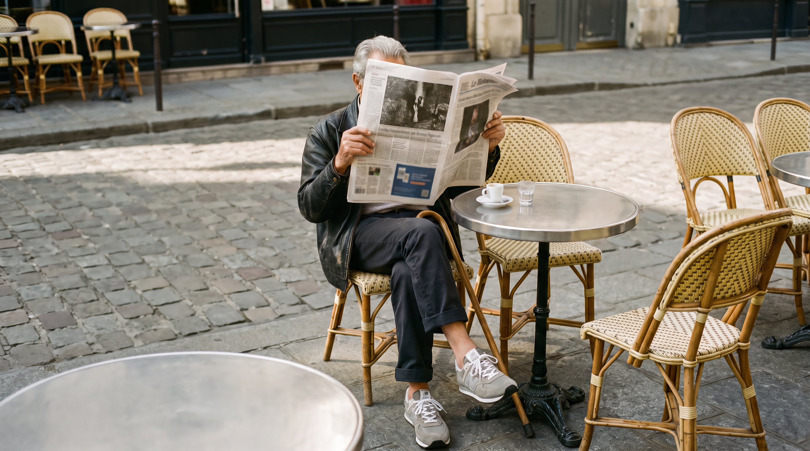
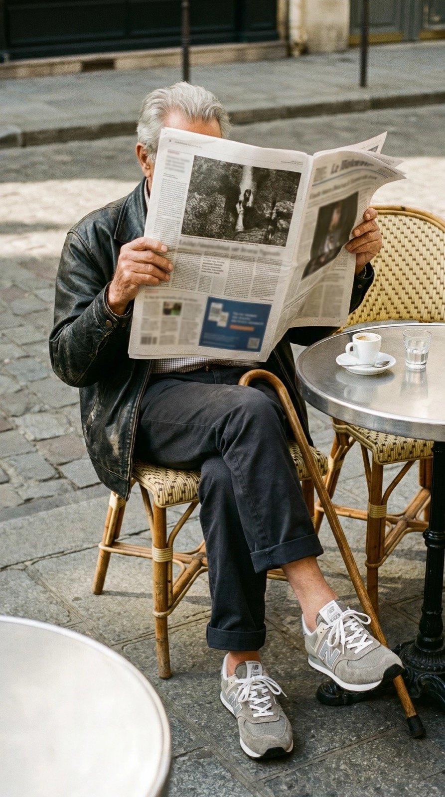
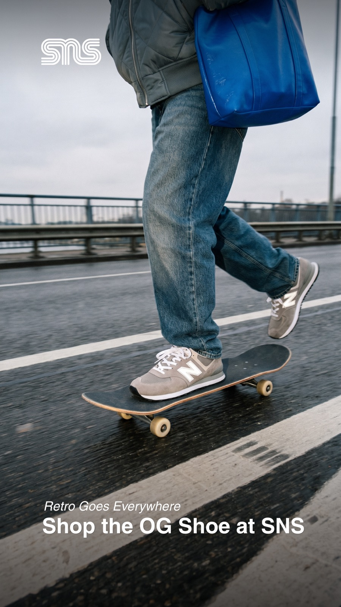
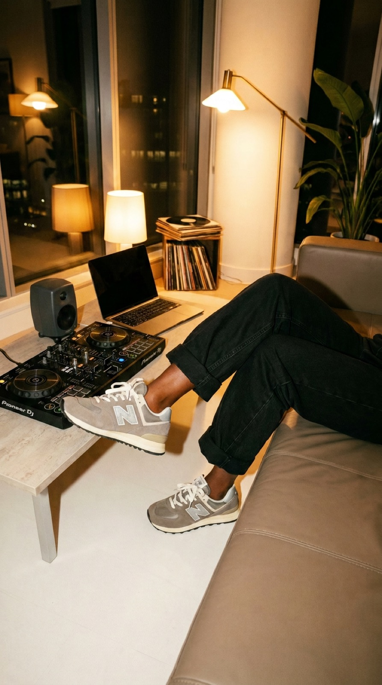
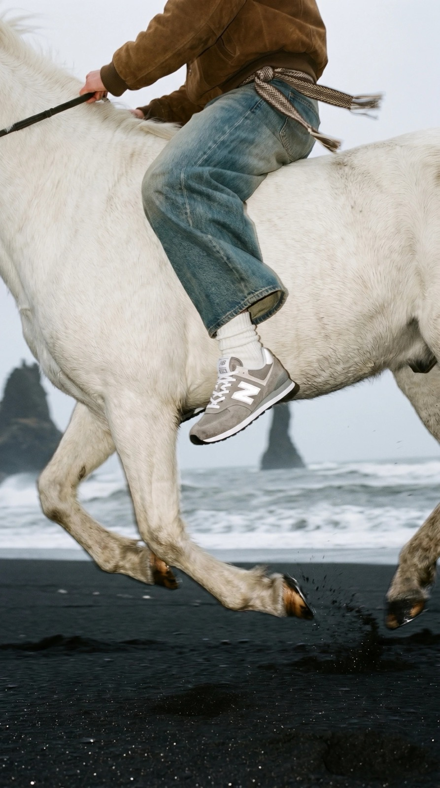
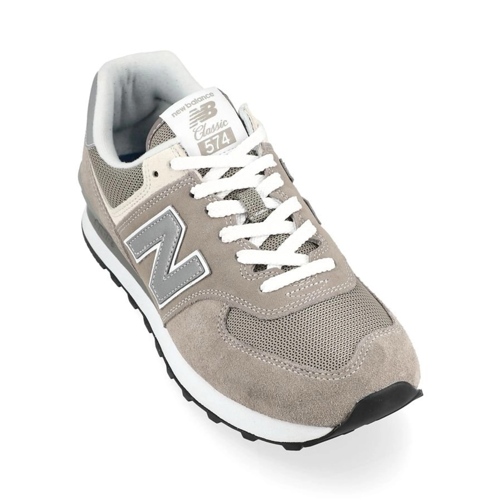

Launch the New Balance 574 from the SNS point of view. No hype, no celebrities, no studio. The shoe on real people in real moments.
Pitch case for SNS, June 2026. Fictional brief, not a commissioned campaign.
SNS was asked to launch the New Balance 574. The task: make people interested and inspired, contextualise it from an SNS point of view, and drive traffic to SNS stores and SNS.com as the single destination.
A real campaign that earns its place in culture: manageable in scope, specific in voice, built to live across every channel.
“Retro Goes Everywhere.”
The 574 is the original retro sneaker, worn by everyone, in every situation. Instead of a product drop, SNS tells it as a cultural constant: a shoe that has always been there and always will be.




No location shoot, no photographer, no talent fees. One locked product, one master style, applied to every scene.
